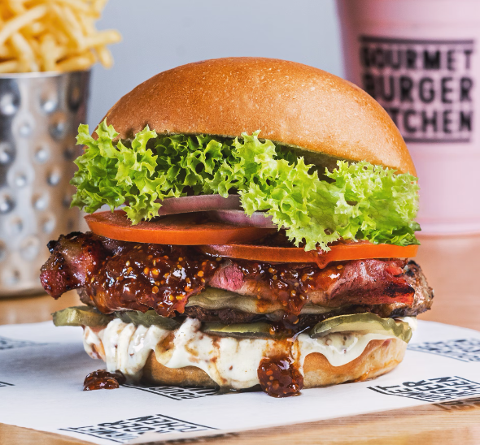

Clásica
Carne picada en forma de disco que se puede acompañar con muchos otros alimentos: cebolla, tomate, papas, lonjas de queso, tiras de tocineta, servido todo dentro de un pan pequeño y blando con semillas de sésamo por encima.